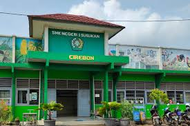

Selamat Datang di SMKN 1 SUSUKAN
Nama : SMKN 1 SUSUKAN NPSN : 20214794 Alamat : JL. BAGUS SERIT Desa/Kelurahan : KEDONGDONG Kecamatan/Kota (LN) : KEC. SUSUKAN Kab.-Kota/Negara (LN) : KAB. CIREBON Propinsi/Luar Negeri (LN) : PROV. JAWA BARAT Status Sekolah : NEGERI Bentuk Pendidikan : SMK Jenjang Pendidikan : DIKMEN
Pelajari Lebih Lanjut